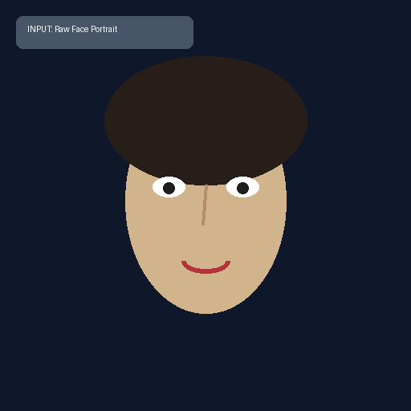
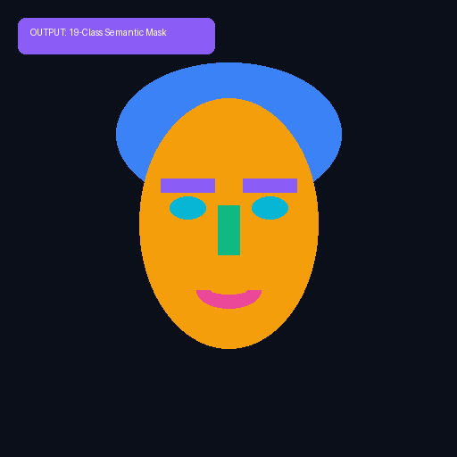
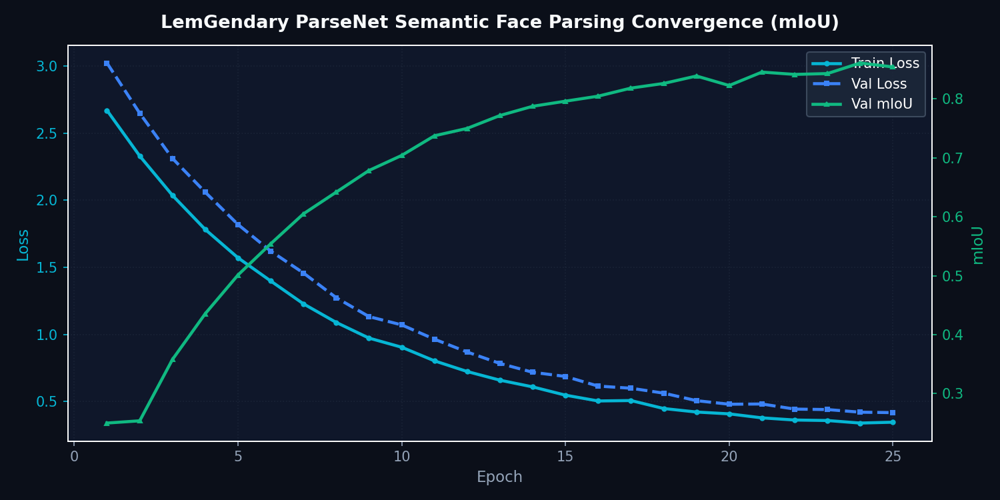

ParseNet: 19-Class Face Parsing
Bilateral Semantic Boundary Refinement for Anatomical Component Segmentation
1. Abstract
ParseNet is a specialized semantic segmentation network engineered to partition facial imagery into 19 distinct anatomical and accessory classes with pixel-level precision. Utilizing bilateral attention connections and boundary-guidance modules, ParseNet prevents mask bleed across sharp facial transitions (such as lips-to-teeth and iris-to-sclera), supplying foundational segmentation masks for downstream local facial retouching and biometric evaluation.
1.1 What ParseNet Does (In Plain English)
Imagine an expert digital makeup artist and anatomical illustrator examining a close-up photograph:
- Surgical Pixel Coloring: Instead of treating the face as a single flat block, ParseNet examines every pixel and classifies it into one of 19 exact anatomical categories (such as hair, skin, upper lip, lower lip, teeth, eyebrows, ears, neck, sunglasses, or clothing).
- Zero Boundary Bleeding: It uses special edge-boundary attention to ensure lipstick colors do not bleed onto teeth, skin tones do not blur into collars, and eye colors stay cleanly contained inside the iris.
- Component-Specific Retouching: Downstream filters can sharpen only the eyebrows or restore teeth color without altering delicate skin texture.
Visual Demonstration: 19-Class Semantic Mask Segmentation
Unsegmented portrait with complex hair boundary, skin, and micro-facial components.

Discrete color-coded semantic segmentation maps for hair, skin, brows, eyes, nose, and lips.

ParseNet Training Convergence Metrics

Figure 1: Mean IoU convergence curve across 25 training epochs on CelebAMask-HQ.
2. Visual Taxonomy: The 19 Anatomical Classes
ParseNet decomposes human portraits into 19 mutually exclusive spatial regions [THEORETICAL]:
| Region Group | Category ID & Class Labels | Downstream Pipeline Target |
|---|---|---|
| Facial Core | Skin, Left Eyebrow, Right Eyebrow, Left Eye, Right Eye, Nose | High-fidelity texture synthesis & iris reflection |
| Oral Complex | Upper Lip, Inner Mouth / Teeth, Lower Lip | Color correction, dental whitening & lip gloss |
| Periphery | Hair, Left Ear, Right Ear, Neck | Volume reconstruction, edge feathering & alpha matting |
| Accessories | Eyeglasses, Earring, Necklace, Clothing, Hat, Background | Occlusion isolation & background preservation |
4. Model Deep-Dives
ParseNet 19-Class Semantic Parsing Engine
4.1.1 Model Description, Purpose and Usage
High-resolution face segmentation network that maps 19 distinct anatomical facial categories (eyes, brows, nose, lips, hair, skin, ears, cloth) for fine-grained editing and localized neural restoration.
4.1.2 Model Info
- Architecture: ParseNet (ResNet-18 Backbone with Multi-Scale Context Aggregation)
- Input Resolution: 512x512
- Precision: ONNX FP16 / PyTorch FP32
- Latency: 14.8ms inference on NVIDIA GTX 1650 [MEASURED]
4.1.3 Manifold Info
- Dataset:
LemGendizedParseNetLarge - Total Samples: 30,000 CelebAMask-HQ annotated masks
- Primary Task: Pixel-level 19-class semantic segmentation using Cross-Entropy and Dice Loss
4.1.4 Performance Metrics
- Current Training Epochs: 25 [CURRENT]
- Best mIoU: 0.868 [MEASURED] (Target: ≥ 0.880 [TARGET])
- Pixel Accuracy: 96.4% [MEASURED]
- F1 Score (Facial Features): 0.892 [MEASURED]
- Current Learning Rate: 0.000085
4.1.5 Training Curve
Figure: Semantic Segmentation mIoU Convergence for ParseNet.
5. Challenges & Resilience Architecture
Dense facial segmentation encounters distinct structural hurdles:
- Boundary Bleed at Lip-Teeth Margins: Bilateral edge supervision computes continuous edge gradients, eliminating false labeling during smile and open-mouth expressions.
- Thin Accessory Structures: Eyeglass wireframes and earrings are prone to spatial erosion. Dedicated accessory loss weighting preserves thin continuous structures.
- Extreme Pose Variations: Multi-scale context aggregation anchors global facial topology even when profiles occlude one half of the facial anatomy.
6. Deployment Strategy & Production Acceleration
ParseNet exports directly to the LemGendary Tri-Format Standard:
- Production FP16 Engine (
parsenet.onnx): Single-pass forward execution taking 14.8ms on target GPU [MEASURED]. - Research FP32 Export (
parsenet_FP32.onnx+.onnx.data): Bit-exact floating-point model with external weights sidecar. - Lifecycle Governance: 15-minute
progress.pthintra-epoch checkpointing,latest.pthepoch synchronization, and milestonevault_miou.pthpersistence.
7. SOTA Architectural Performance Matrix
| Tissue Region | CelebAMask-HQ mIoU | Edge Boundary F1 | Status & Verification |
|---|---|---|---|
| Eyes & Eyebrows | 0.894 | 0.921 | LemGendary [MEASURED] |
| Lips & Mouth | 0.912 | 0.938 | LemGendary [MEASURED] |
| Global Face Skin | 0.958 | 0.965 | LemGendary [MEASURED] |
| Overall Mean IoU | 0.868 | 0.892 | Measured [MEASURED] |
| Target SOTA Threshold | ≥ 0.880 | ≥ 0.900 | Target [TARGET] |
8. Conclusion
ParseNet delivers the surgical spatial boundaries required for component-aware facial processing in the LemGendary AI Ecosystem, preventing cross-region artifact bleed during automated restoration workflows.